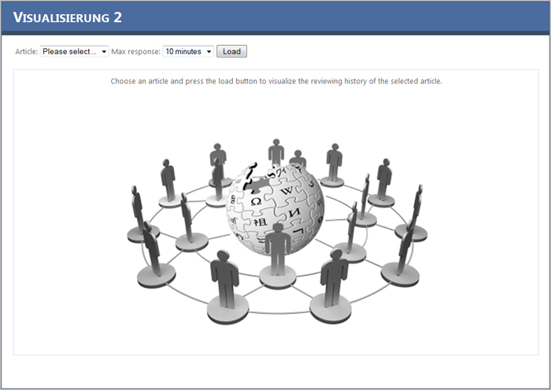
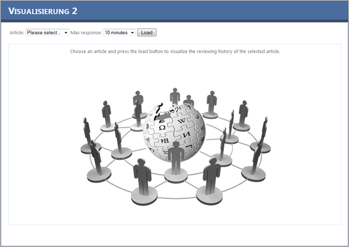
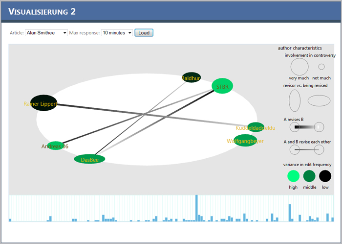
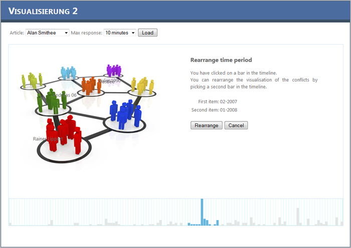
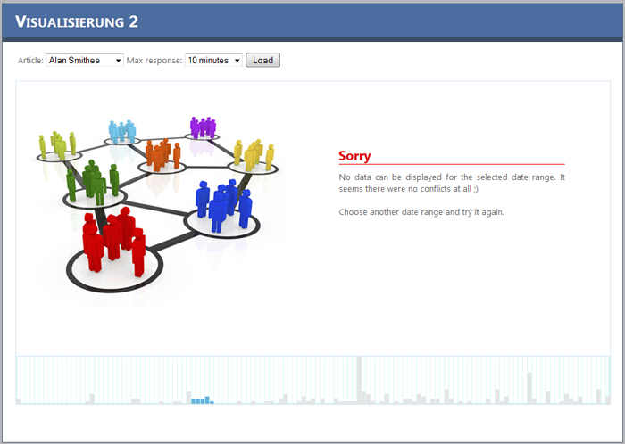

This project is based on the paper Visual Analysis of Controversy in User-generated Encyclopedias
and has been implemented for the course
Visualisierung 2 at the TU Vienna
The complete source code can be downloaded at GitHub.
The complete program is platform independent, we have tested it with Linux and Windows 7.
This document is split into following sections:
0. Preamble
1. How to install
Prerequisites
- WebGL enabled Browser - we have tested it with Mozilla Firefox
- Perl interpreter (on Windows: Strawberry Perl)
- MySQL
- Web Server (IIS with PHP or Apache)
MySQL
Once you have installed MySQL create a UTF-8 database 'wpdump' and execute the following commands:
mysql wpdump < install.sql
Perl
If you are using Windows you have to install an additional Perl interpreter. A good one is
Strawberry Perl. Be careful with the 64-bit version as it might not recognize
additional modules.
The parser needs the following modules:
The parser needs the following modules:
- DBI
- Time::Local
- Text::CSV
- XML::Parser::PerlSAX
On Windows DBI and Time::Local should be available by default.
For the Text::CSV just execute cpan Text::CSV and cpan XML::Parser::PerlSAX for the PerlSAX module.
On Debian you can execute:
apt-get install libdbi-perl libxml-perl libtext-csv-perl
PHP
If you have a Linux environment install Apache, PHP5 and the PHP/Mysql module using your packet manager.
On Windows you have to install the Internet Information Services (IIS) and install PHP. If you are using IIS7 (default in Windows 7) click here for an installation guide. For older versions you can use this solution.
After PHP has been successfully installed use the config.php in the htdocs folder and enter the MySQL credentials there.
On Windows you have to install the Internet Information Services (IIS) and install PHP. If you are using IIS7 (default in Windows 7) click here for an installation guide. For older versions you can use this solution.
After PHP has been successfully installed use the config.php in the htdocs folder and enter the MySQL credentials there.
EvGen - Tool
This tool is used to calculate the eigenvalues/-vectors on the fly. It is a C++ program and has to be compiled before you use it.
For Windows users a VS2010 solution file is provided in the source folder. For Linux users just use a GCC compiler.
Before you compile the program make sure to enter the correct database credentials in the evgen.cpp file in the main function.
If you are using Windows make sure to add the folder where the file: libmysql.dll is located to your Windows Path variable (global). The file can be found in your MySql installation lib folder.
After compilation copy the executable to the
If you are using Windows make sure to add the folder where the file: libmysql.dll is located to your Windows Path variable (global). The file can be found in your MySql installation lib folder.
After compilation copy the executable to the
/htdocs/evgen-bin/ folder.
If you use Eclipse on Linux to compile evgen, make sure you have the includes
/usr/include/mysql
and the libraries:
mysqlclient
pthread
z
m
rt
dl
2. How to use the parser
The parser will extract data out of a wikipedia-metabase-file. These files can be found
here.
Pick a wiki dump (e.g. dewiki for 01-06-2012) and now look for
Be careful because these file can be very big (about 30GB).
Once you have downloaded and extracted a file you can use the parser.
Run
Pick a wiki dump (e.g. dewiki for 01-06-2012) and now look for
stub-meta-history.xml files (these files contain no page text, only revision metadata.).Be careful because these file can be very big (about 30GB).
Once you have downloaded and extracted a file you can use the parser.
Run
perl parse.pl CONNECTION ARTICLES DUMPFILE- CONNECTION : database credentials in the form "dbname,dbhost,dbuser,dbpass"
- ARTICLES : page titles whose history you want to analyze as comma-separated list, e.g. "Alan Smithee, Ang Lee, Aussagenlogik" (use those double quotes!)
- DUMPFILE : path to the Wikipedia dump file
3. How to use the main program
When you navigate to the start page you will see this screen:


In the Article dropdown choose the article to be analyzed. The time you select in the max response dropdown will
be used on data generation to check which authors are revising each other.
For example: you choose 10 minutes (default). An author posts a message at 10:30 and another author posts a message 5 minutes later. Those two persons will be marked as possible conflicts because the posted in the specified time range. If the first author posts 8 minutes later, than it is very likely that a conflict occurred -> this will be marked in the view.
After clicking the Load button the data is beeing generated.
Now the screen should like like this:

For example: you choose 10 minutes (default). An author posts a message at 10:30 and another author posts a message 5 minutes later. Those two persons will be marked as possible conflicts because the posted in the specified time range. If the first author posts 8 minutes later, than it is very likely that a conflict occurred -> this will be marked in the view.
After clicking the Load button the data is beeing generated.
Now the screen should like like this:
As you can see in the screenshot, many conflicts occurred on this article. Ellipses which have positions opposite of each other
indicate that those persons are in conflict. If they are connected by a line it indicates who revises whom. The bigger the line,
the greater the conflict is between the two authors. Another indicator is the form of the ellipses. If it is very flat the author
is beeing revised most of the time. If it "stands" the author revises other persons more often. The color of the author indicates
how fast he/she responds to revisions.
The timeline at the bottom shows the number of edits per month. When you move over the timeline you can see the current month and the number of revisions in the status label right on top of the timeline.
If you click on a month in the timeline another screen comes up. Using this screen you can rearrange the conflict display. By clicking on a month in the timeline you specify the start date. Hold the [SHIFT] key and click on another month in the timeline, this will set the second date. The range you selected should be marked blue, everything else gray. Now click on the Rearrange button to draw the conflict pattern in the selected time range or click the cancel button to use the complete range.

The timeline at the bottom shows the number of edits per month. When you move over the timeline you can see the current month and the number of revisions in the status label right on top of the timeline.
If you click on a month in the timeline another screen comes up. Using this screen you can rearrange the conflict display. By clicking on a month in the timeline you specify the start date. Hold the [SHIFT] key and click on another month in the timeline, this will set the second date. The range you selected should be marked blue, everything else gray. Now click on the Rearrange button to draw the conflict pattern in the selected time range or click the cancel button to use the complete range.
It might happen that you select a date range where no conflicts are detected. In that case there will be nothing to be displayed.

4. How does the program work
First of all the parser extracts necessary content and saves it into the database (username and revision date).
In the next step the weights between different authors are calculated based on the provided max response time.
This is done in the MySql-Routine "getEdges()".
Therefore the time difference between two subsequent revisions is taken. If this difference is smaller than the max response time
the result is normalized and saved as weight. If this happens more than once to the same authors the weights are summed up.
Now the adjacency matrix is being generated. This is done in the EvGen-tool and can look like this:

Now the adjacency matrix is being generated. This is done in the EvGen-tool and can look like this:
After the matrix has been created the eigenvalues are calculated. The smallest eigenvalue and its corresponding eigenvector
is used to get the x-Location of an author. The second smallest eigenvalue and its corresponding eigenvector is
multiplied with the difference between the two smallest eigenvalues and generates the y-Location.
For a better look the x/y values are rearranged to fit on an ellipse.
For a better look the x/y values are rearranged to fit on an ellipse.
5. Why so many different tools
Because we worked on different operating system, and web applications are always limited to the platforms they are hosted on
we used different tools to solve the different problems.
The parser
First we needed to extract the necessary data out of the big xml dump files. Because it takes some time to parse a 30GB file
we wrote a tool which uses a SAX parser to extract only the usernames and the revision date.
The EvGen tool
Another problem was to calculate eigenvalues efficiently. The method described in the paper used symmetric adjacency matrices
and calculated the positions of the authors by solving an eigenvalue problem. The challenge was to do this quick for very big
matrices (up to 1000x1000).
Therefore we tried different libraries.
The first one was written in JavaScript but it gave up on matrices larger than 20 columns.
The second one was the LAPACK library which is written in Fortran and is available in PHP (but only on Linux systems - it is very difficult to get it running on a Windows machine - to difficult for this lecture). Another problem with this library was that it did not return the complete eigenvectors.
The next library was ALGLIB. It served our needs but it was only available for external tools like C#, C++, VBA, Delphi or Python. So we chose C++ because this language runs everywhere ;).
In the beginning this tool did everything as expected. When we were almost finished with the drawing of the author positions we observed weird behavior. We figured out, that this library produced huge rounding errors on larger matrices (up to 200x200).
So we had to choose another library and found the EIGEN template library finally.
Therefore we tried different libraries.
The first one was written in JavaScript but it gave up on matrices larger than 20 columns.
The second one was the LAPACK library which is written in Fortran and is available in PHP (but only on Linux systems - it is very difficult to get it running on a Windows machine - to difficult for this lecture). Another problem with this library was that it did not return the complete eigenvectors.
The next library was ALGLIB. It served our needs but it was only available for external tools like C#, C++, VBA, Delphi or Python. So we chose C++ because this language runs everywhere ;).
In the beginning this tool did everything as expected. When we were almost finished with the drawing of the author positions we observed weird behavior. We figured out, that this library produced huge rounding errors on larger matrices (up to 200x200).
So we had to choose another library and found the EIGEN template library finally.
PHP and MySql
For our implementation we chose WebGL. Because this is a JavaScript based language and it runs in the browser we needed
a server side scripting language (for platform independence we chose PHP). Also we had to store and handle huge amounts of data, so
a database system was necessary as well (again a platform independent system: MySql).
6. Code locations
Tools and programs:
- Parser: /parser/
- EvGen: /evgen/
- PHP files: /htdocs/
- WebGL files: /htdocs/scripts/
- PrototypeJS: /htdocs/scripts/ (A JavaScript framework which makes life easier ;)
- Eigen: /evgen/Eigen/ (Eigenvalue problem solver C++ library)
Images beeing used have been found on the Internet. Copyright belongs to their creators.
http://www.hrdiscussion.com/imgcache/10100.imgcache
http://businessmindsetexpert.com/blog/wp-content/uploads/2011/01/social-networking-for-businesses.jpg
http://upload.wikimedia.org/wikipedia/commons/6/63/Wikipedia-logo.png
http://www.hrdiscussion.com/imgcache/10100.imgcache
http://businessmindsetexpert.com/blog/wp-content/uploads/2011/01/social-networking-for-businesses.jpg
http://upload.wikimedia.org/wikipedia/commons/6/63/Wikipedia-logo.png